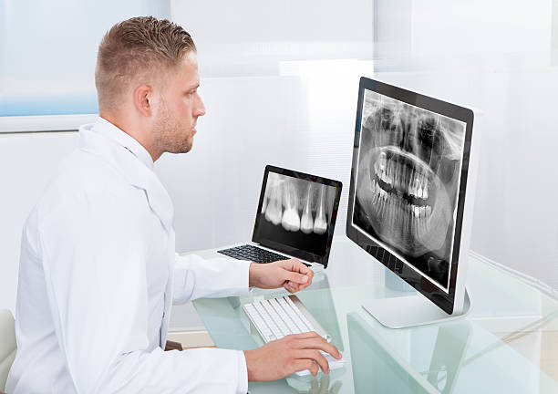

Department of Radiography Radiotherapy is the only among five departments of Faculty of Allied Health Sciences (FAHS) offering two degrees namely B.Sc. in radiography and B.Sc. in radiotherapy. This is the only department in Sri Lanka conducting degree programmes for these courses. Department has four batches at present, out of which 32 students in final year: 28 students in third year and 23 students in second year, and 18 students in first year.
